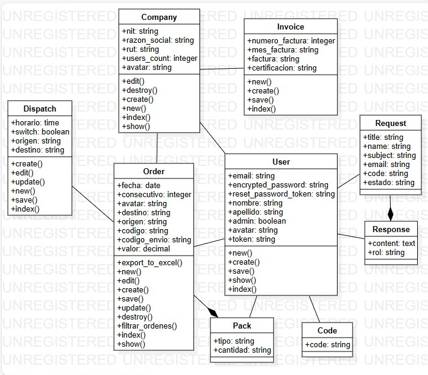
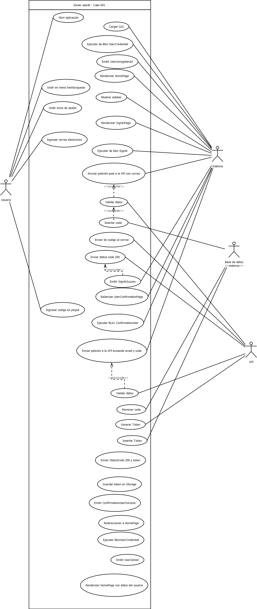
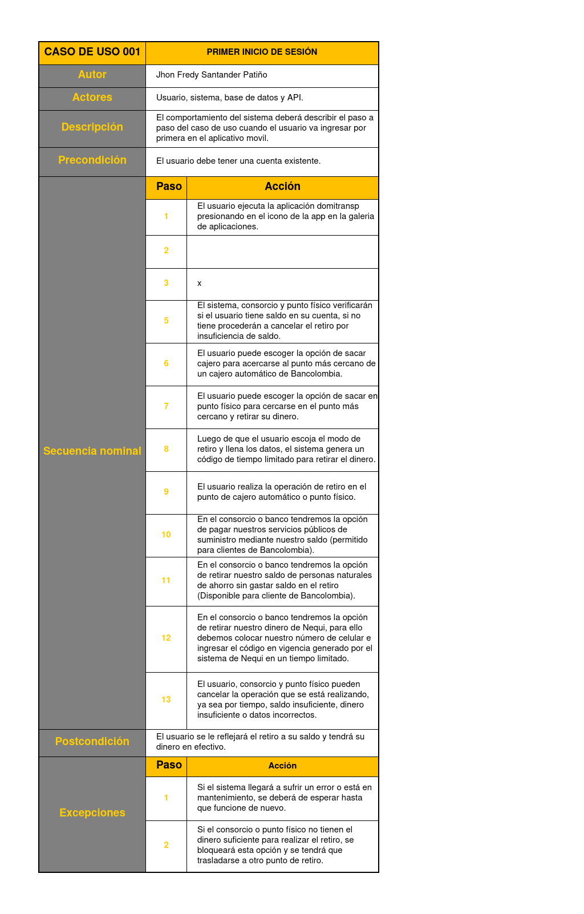
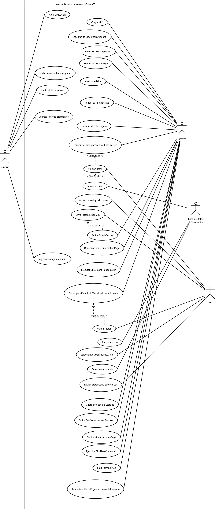
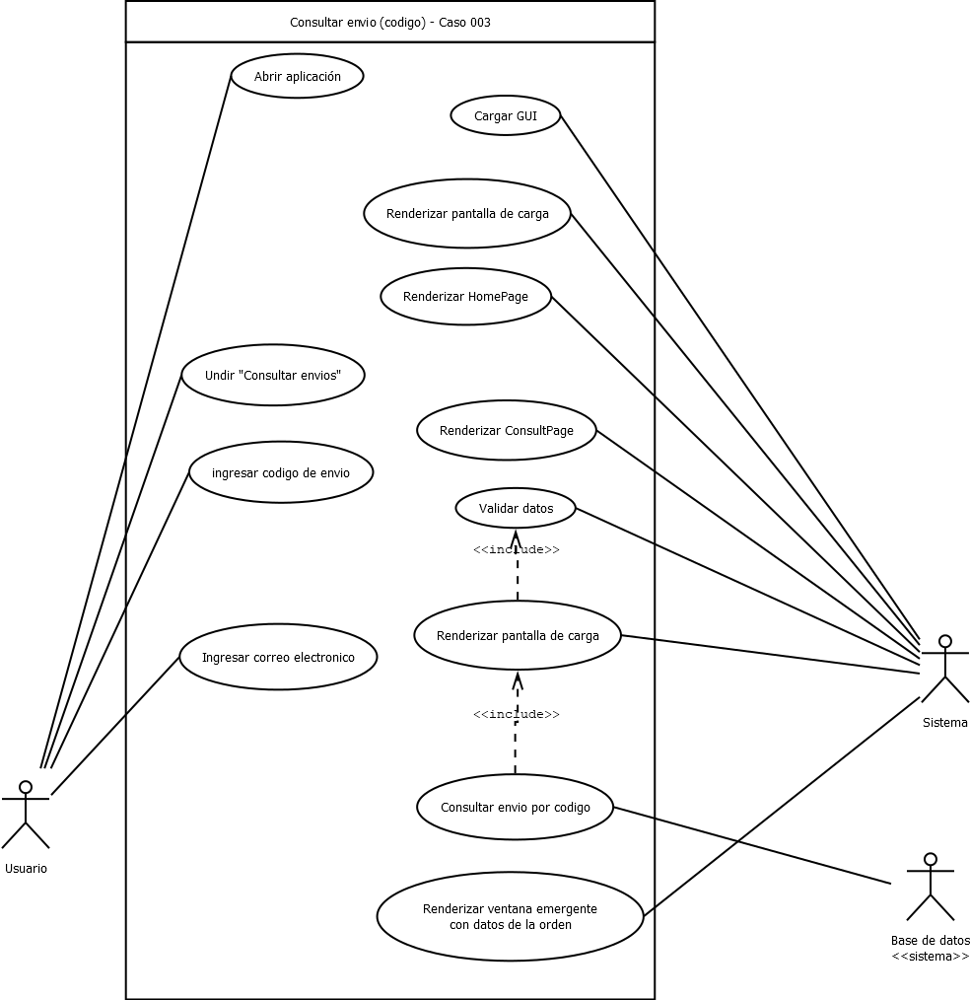
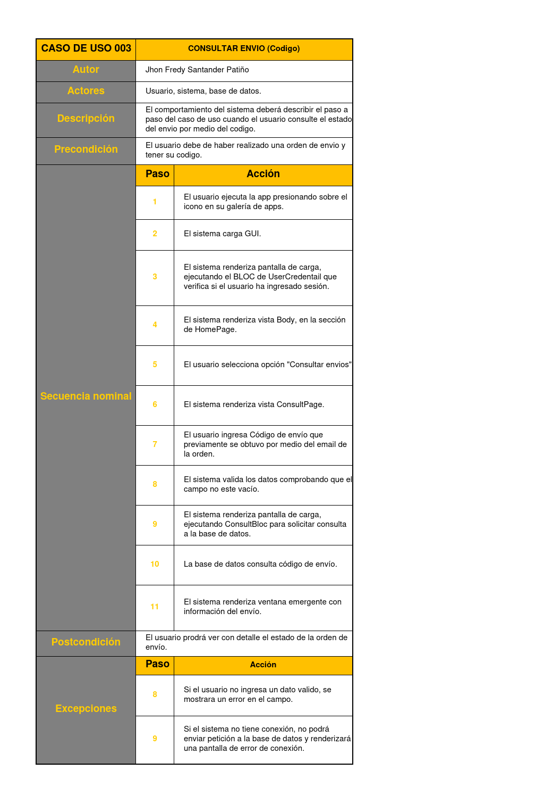
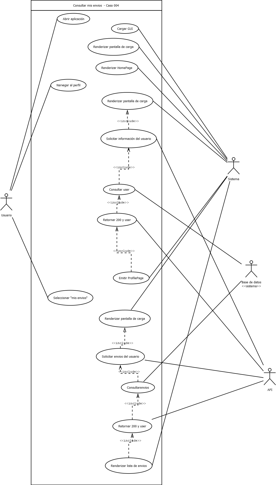
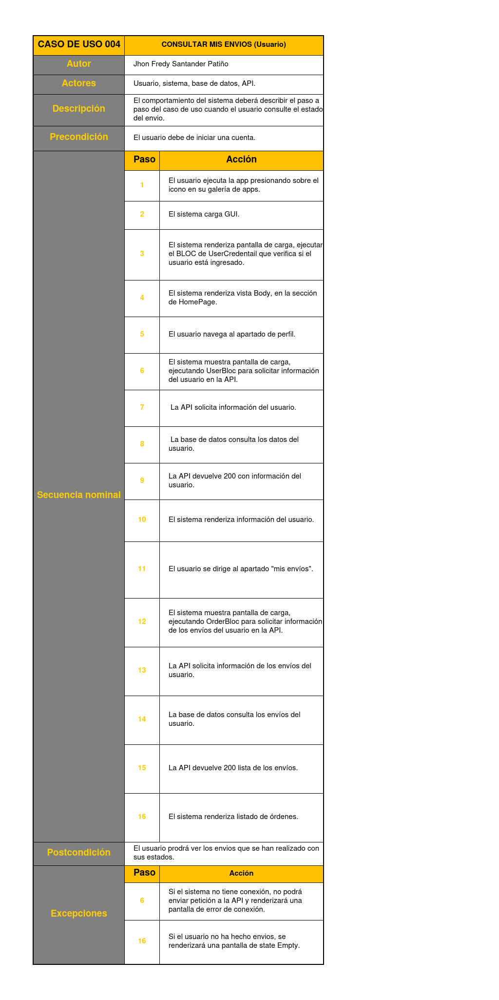

Diagrama de clases
Los diagramas de clases describen un sistema visualizando los diferentes tipos de objetos dentro de un sistema y los tipos de relaciones estáticas que existen entre ellos. También ilustra las operaciones y atributos de las clases.
Casos de Uso
Un diagrama de casos de uso es una representación visual de las diferentes maneras y posibles escenarios de usar un sistema. Ilustra cómo los usuarios realizan acciones e interactúan con un sistema específico.
Login
El caso de uso "Login" representa el proceso mediante el cual los usuarios acceden al sistema proporcionando sus credenciales.

Crear orden
El caso de uso "Crear orden" permite a los usuarios normales agendar una orden en el sistema. Incluye la creación y programación de nuevas órdenes de envío.

Aceptar orden
El caso de uso "Aceptar orden" está diseñado para que los administradores revisen y editen las órdenes creadas por usuarios normales. Involucra asignar estados, rutas y valores a las órdenes.

Crear empresa
El caso de uso "Crear empresa" está reservado para los administradores y les permite agregar nuevas empresas al sistema.

Crear usuario
El caso de uso "Crear usuario" implica la creación de nuevos usuarios dentro de una empresa. Esto es realizado por administradores.

Casos de Uso - Móvil
Un diagrama de casos de uso móvil es una representación visual de las diferentes maneras y posibles escenarios de usar la versión móvil de un sistema. Ilustra cómo los usuarios realizan acciones e interactúan con la aplicación móvil específica.
Login 1
El caso de uso "Login" representa el proceso mediante el cual los usuarios acceden al sistema proporcionando sus credenciales, ademas, la API creadara un token por ser la primera vez ingresando
 Login 2
Lo mismo que antes,pero con el cambio de que ya a ingresado antes la API no genera ningun token
Consultar envio 1
Consulta rapida de ordenes por medio de el codigo generado para dicha orden
 Consultar envio 2
Consulta de todas las ordenes hechas por el usuario
 Login 1
Login 1
El caso de uso "Login" representa el proceso mediante el cual los usuarios acceden al sistema proporcionando sus credenciales.